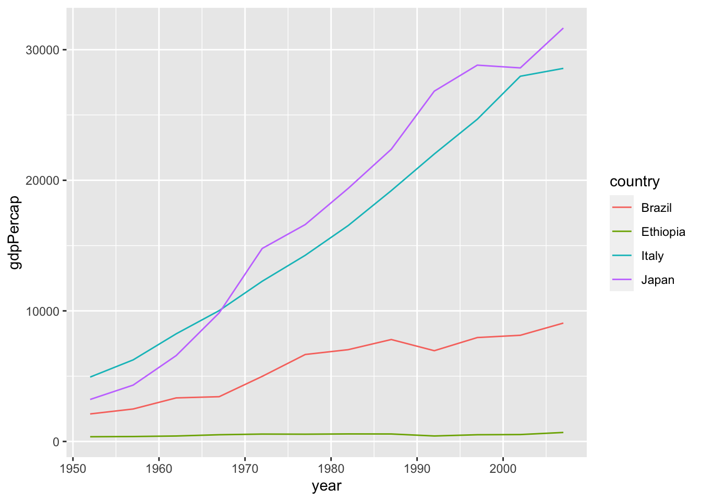

Chapter 1 Introduction
1.2 R syntax
Here a brief overview of the main components of the R language.
Note: this is not a complete guide on the language nor on programming in general, but rather a quick-start introduction with the most used operations and structures, which assumes some very basic programming skills. For all the rest, Google is your friend (it really is).
1.2.1 Basic operations
R can be used as a fully featured calculator, typically directly from the console (see bottom panel in RStudio).
Some examples:
2 + 2 # calculator-style## [1] 4c(1, 2, 3) * 4 # vector operations## [1] 4 8 12t(matrix(c(c(1, 2, 3, 4)),
nrow = 2, ncol = 2)) # matrix operations (transpose) ## [,1] [,2]
## [1,] 1 2
## [2,] 3 4As any other programming language, it allows for variables declaration. Variables hold a value which can be assigned, modified, and used for other computations.
a <- 2 # assign values to variables
b = a + 2 # equal sign also valid, but...
b## [1] 4The arrow sign <- is the traditional sign for the assignment operation,
but also = works. Check this examples to see why <-
is recommended.
Conditional statements and loops have straightforward syntax (similar to C/C++ , but more compact).
if (b == 4 & a > 0) { # if-else statement
out <- ""
for (i in 1:b) { # for loop
out <- paste(out, class(b)) # concatenate two or more strings
}
print(out) # print string to output
} else {
stop("error") # stop program and exit
}## [1] " numeric numeric numeric numeric"While <- is only used for variable assignment, i.e. filling up the variable
allocated space with some value, the = is both used for assignment and
function argument passing (as introduced in Functions).
1.3 Functions
Functions are called with the () operator and present named arguments.
# get Normal samples with 0 (default) mean and 10 standard deviation
array <- rnorm(10, sd = 10) # sd is an argument,
# the mean is left to the default 0
array## [1] 13.9451393 -7.1176737 -9.4431784 8.8934239 4.6542653 5.3000924
## [7] 14.5690151 0.9156836 18.9044585 -6.7012162You can explicitly call the arguments to which you want to pass the parameters (e.g. sd of the Gaussian). In this case it is necessary, because the second position argument is the mean, but we want it to be the default.
1.3.1 Definition
To define a custom function
# implements power operation
#'
#' @param x a real number
#' @param n a natural number, defaults to 2
#' @return n-th power of x
pow <- function(x, n = 2) {
ans <- 1
if (n > 0) {
for (i in 1:n) {
ans <- ans * x
}
} else if (n == 0) {
# do nothing, ans is already set to 1
} else {
stop("error: n must be non-negative")
}
return(ans)
}
print(paste("3^5 = ", pow(3, 5),
", 4^2 = ", pow(4),
", 5^0 = ", pow(5, 0)))## [1] "3^5 = 243 , 4^2 = 16 , 5^0 = 1"The return() call can be omitted (but it’s better not to).
pow <- function(a, b) {
ans <- 1
# ...
# last expression is returned
ans # this is equivalent to write return(ans)
}1.4 Data types
Every variable in R is an object, which holds a value (or collection of values) and some other attributes, properties or methods.
1.4.1 Base types
There are 5 basic data types:
- numeric (real numbers)
- integer
- logical (aka boolean)
- character
- complex (complex numbers)
1.4.1.1 Numeric
When you write numbers in R, they are going to default to numeric type values
a <- 3.4 # decimal
b <- -.30 # signed decimal
c <- 42 # also without dot, it's numeric
print(paste0("data types | a:", class(a),
", b:", class(b),
", c:", class(c)))## [1] "data types | a:numeric, b:numeric, c:numeric"1.4.1.2 Integer
Integer numbers can be enforced typing an L next to the digits.
Casting is implicit when the result of an operation involving integers
is not an integer
int_num <- 50L # 50 stored as integer
non_casted_num <- int_num - 2L # result is exactly 48, still int
casted_num <- int_num / 7L # implicit cast to numeric type to store decimals
print(paste(class(int_num), class(non_casted_num), class(casted_num), sep = ", "))## [1] "integer, integer, numeric"1.4.1.3 Logical
The logical type can only hold TRUE or FALSE (in capital letters)
bool_a <- FALSE
bool_b <- T # T and F are short for TRUE and FALSE
bool_a | !bool_b # logical or between F and not-T## [1] FALSEYou can test the value of a boolean also using 0,1
bool_a == 0 # if 'A' is not equal to 'not B', raise an error## [1] TRUEand a sum between logical values, treats FALSE = 0 and TRUE = 1,
which is useful when counting true values in logical arrays
bool_a + bool_b + bool_b # FALSE + TRUE + TRUE (it's not an OR operation)## [1] 21.4.1.4 Character
A character is any number of characters enclosed in quotes ' ' or double
quotes " ".
char_a <- "," # single character
char_b <- "bird" # string
char_c <- 'word' # single quotes
full_char <- paste(char_b, char_a, char_c) # concatenate chars
class(full_char) # still a character## [1] "character"1.4.1.5 Complex
complex_num <- 5 + 4i
Mod(complex_num) # try all complex operations, e.g. modulus## [1] 6.4031241.4.1.6 Special values
NA: “not available”, missing valueInf: infinityNaN: “not-a-number”, undefined value
missing_val <- NA
is.na(missing_val) # test if value is missing## [1] TRUEEvery operation involving missing values, will output NA
missing_val == NA # cannot use ==## [1] NAprint(paste(
"1/0 = ", 1/0,
", 0/0 = ", 0/0
))## [1] "1/0 = Inf , 0/0 = NaN"These special values are not necessarily unwanted, but they require
extra care. E.g. Inf can appear also in case of numerical overflow.
exp(1000)## [1] Inf1.4.1.7 Conversion
Variables types can be converted with as.<typename>()-like functions, as long
as conversion makes sense. Some examples:
v <- T
w <- "0"
x <- 3.2
y <- 2L
z <- "F"
cat(paste(
paste(x, as.integer(x), sep = " => "), # from numeric to integer
paste(y, as.numeric(y), sep = " => "), # from integer to numeric
paste(y, as.character(y), sep = " => "), # from integer to character
paste(w, as.numeric(w), sep = " => "), # from number-char to numeric
paste(v, as.numeric(v), sep = " => "), # from logical to numeric
sep = "\n"
))## 3.2 => 3
## 2 => 2
## 2 => 2
## 0 => 0
## TRUE => 1as.numeric(z) # from character to numeric (coercion warning - NA)## Warning: NAs introduced by coercion## [1] NA1.4.2 Vectors and matrices
1.4.2.1 Vectors
Vectors are build with the c() function.
A vector holds values of the same type.
vec1 <- c(4, 3, 9, 5, 8)
vec1## [1] 4 3 9 5 8Vector operations and aggregation of values is as intuitive as it can be.
vec2 <- vec1 - 1 # subtract 1 to all values (broadcast)
sum(vec1) # sum all values in vec1## [1] 29mean(vec2) # compute the mean## [1] 4.8sort(vec1, decreasing = TRUE) # sort elements in decreasing order## [1] 9 8 5 4 3Conversion is still possible and it’s made element by element.
char_vec <- as.character(vec1) # convert every value in vec1 to char
char_vec## [1] "4" "3" "9" "5" "8"Range vectors (unit-stepped intervals) are built with start:end syntax.
Note: the type of range vectors is integer, not numeric.
x_range <- 1:10
class(x_range)## [1] "integer"They are particularly useful in loops statements:
vec3 <- c() # declare an empty vector
# iterate all the indices along vec1
for (i in 1:length(vec1)) {
vec3[i] <- vec1[i] * i # access with [idx]
}
vec3## [1] 4 6 27 20 40Vector elements are selected with square
brackets []. Putting vectors inside brackets performs
slicing
vec1[1:3] # first 3 elements## [1] 4 3 9vec1[c(1,3)] # only first and third element## [1] 4 9vec1[-c(1:3)] # all but elements 1 to 3## [1] 5 8vec1[seq(1, length(vec1), 2)] # odd position elements## [1] 4 9 8To find an element in a vector and get its index/indices,
the which() function can be used
which(vec1 == 3)## [1] 2which(vec1 < 5)## [1] 1 2And finally, to filter only values that satisfy a
certain condition, we can combine which with
splicing.
vec1[which(vec1 >= 5)]## [1] 9 5 8# or, equivalently, using logical masking
vec1[vec1 >= 5]## [1] 9 5 81.4.2.2 Matrices
Matrices are built with matrix()
mat1 <- matrix(1:24,
nrow = 6, ncol = 4)
mat1 # filled column-wise (default)## [,1] [,2] [,3] [,4]
## [1,] 1 7 13 19
## [2,] 2 8 14 20
## [3,] 3 9 15 21
## [4,] 4 10 16 22
## [5,] 5 11 17 23
## [6,] 6 12 18 24mat2 <- matrix(1:24,
nrow = 6, ncol = 4, byrow = TRUE)
mat2 # filled row-wise## [,1] [,2] [,3] [,4]
## [1,] 1 2 3 4
## [2,] 5 6 7 8
## [3,] 9 10 11 12
## [4,] 13 14 15 16
## [5,] 17 18 19 20
## [6,] 21 22 23 24dim(mat2) # get dimensions## [1] 6 4c(nrow(mat2), ncol(mat2)) # get number of rows and cols separately## [1] 6 4# or, equivalently
dim(mat2)[1] # nrow## [1] 6All indexing operations available on vectors, are also available on matrices
mat2[1, 1] # element 1,1## [1] 1mat2[3, ] # third row (empty space for all elements)## [1] 9 10 11 12mat2[1:2, 1:2] # upper left 2x2 sub-matrix## [,1] [,2]
## [1,] 1 2
## [2,] 5 6t(mat2) # transposed matrix## [,1] [,2] [,3] [,4] [,5] [,6]
## [1,] 1 5 9 13 17 21
## [2,] 2 6 10 14 18 22
## [3,] 3 7 11 15 19 23
## [4,] 4 8 12 16 20 24Operations with matrix and vectors can be both element-wise
and matrix operations (e.g. scalar product).
Note that a vector built with c() is a column vector by default.
Some examples:
diagonal_mat <- diag(nrow = 4) # 4x4 identity matrix
# element by element
diagonal_mat * 1:2 # note: 1:2 is repeated to match the matrix dimensions ## [,1] [,2] [,3] [,4]
## [1,] 1 0 0 0
## [2,] 0 2 0 0
## [3,] 0 0 1 0
## [4,] 0 0 0 2diagonal_mat %*% seq(2, 8, 2) # matrix multiplication (4,4) x (4, 1) -> (4, 1)## [,1]
## [1,] 2
## [2,] 4
## [3,] 6
## [4,] 8v1 <- 1:4
v2 <- 4:1
v1 %*% v2 # here v1 is implicitly converted to row vector## [,1]
## [1,] 201.4.2.3 Arrays
Arrays are multi-dimensional vectors (generalization of a matrix with more than two dimensions). They work pretty much like matrices.
arr1 <- array(1:24, dim = c(2, 4, 3))
arr1## , , 1
##
## [,1] [,2] [,3] [,4]
## [1,] 1 3 5 7
## [2,] 2 4 6 8
##
## , , 2
##
## [,1] [,2] [,3] [,4]
## [1,] 9 11 13 15
## [2,] 10 12 14 16
##
## , , 3
##
## [,1] [,2] [,3] [,4]
## [1,] 17 19 21 23
## [2,] 18 20 22 24arr1[2, 1, 3] # get one element## [1] 18sliced_arr <- arr1[, 2, ] # slice at column 2
sliced_arr## [,1] [,2] [,3]
## [1,] 3 11 19
## [2,] 4 12 20dim(sliced_arr) # reduces ndims by one (dimension selected is dropped)## [1] 2 31.4.3 Lists and dataframes
Lists are containers that can hold different data types. Each entry, which can even be another list, has a position in the list and can also be named.
list1 <- list(1:3, TRUE, x = c("a", "b", "c"))
list1## [[1]]
## [1] 1 2 3
##
## [[2]]
## [1] TRUE
##
## $x
## [1] "a" "b" "c"list1[[3]] # access with through index## [1] "a" "b" "c"list1$x # access through name## [1] "a" "b" "c"Dataframes are collections of columns that have the same length. Contrarily to matrices, columns in dataframes can be of different types. They are the most common way of representing structured data and most of the dataset will be stored in dataframes.
df1 <- data.frame(x = 1, y = 1:10,
char = sample(c("a", "b"), 10, replace = TRUE))
df1 # x was set to just one value and gets repeated ('recycled')## x y char
## 1 1 1 b
## 2 1 2 a
## 3 1 3 a
## 4 1 4 a
## 5 1 5 b
## 6 1 6 a
## 7 1 7 a
## 8 1 8 a
## 9 1 9 a
## 10 1 10 bdf1[[2]] # access through column index## [1] 1 2 3 4 5 6 7 8 9 10df1$x # access through column name## [1] 1 1 1 1 1 1 1 1 1 1df1[, 3] # access with matrix-style index## [1] "b" "a" "a" "a" "b" "a" "a" "a" "a" "b"df1[2:4, ] # can also select subset of rows## x y char
## 2 1 2 a
## 3 1 3 a
## 4 1 4 aThe dplyr library provides another dataframe object (called tibble) which has all
the effective features of Base R data.frame and none of the
deprecated functionalities. It’s simply a newer version of dataframes (therefore
recommended over the old one).
library("tibble")
tibble(x = 1:15, y = 1, z = x / y) # tibble dataframe ## # A tibble: 15 × 3
## x y z
## <int> <dbl> <dbl>
## 1 1 1 1
## 2 2 1 2
## 3 3 1 3
## 4 4 1 4
## 5 5 1 5
## 6 6 1 6
## 7 7 1 7
## 8 8 1 8
## 9 9 1 9
## 10 10 1 10
## 11 11 1 11
## 12 12 1 12
## 13 13 1 13
## 14 14 1 14
## 15 15 1 15For more information on tibble and its advantages with respect to traditional
dataframes, type vignette("tibble") in an R console.
Notice that you can convert datasets to tibble with as_tibble(), while
with as.data.frame() you will get a Base R dataframe.
1.5 Data manipulation
Now that we know what a dataframe is and how it is generated, we can focus on data manipulation.
The dplyr library provides an intuitive way of working with datasets.
For instance, let’s consider the mtcars dataset.
library(dplyr)##
## Attaching package: 'dplyr'## The following objects are masked from 'package:stats':
##
## filter, lag## The following objects are masked from 'package:base':
##
## intersect, setdiff, setequal, unionmtcars$modelname <- rownames(mtcars) # name column with models
mtcars <- as_tibble(mtcars) # convert to tibble
mtcars # display the raw data## # A tibble: 32 × 12
## mpg cyl disp hp drat wt qsec vs am gear carb modelname
## <dbl> <dbl> <dbl> <dbl> <dbl> <dbl> <dbl> <dbl> <dbl> <dbl> <dbl> <chr>
## 1 21 6 160 110 3.9 2.62 16.5 0 1 4 4 Mazda RX4
## 2 21 6 160 110 3.9 2.88 17.0 0 1 4 4 Mazda RX4 …
## 3 22.8 4 108 93 3.85 2.32 18.6 1 1 4 1 Datsun 710
## 4 21.4 6 258 110 3.08 3.22 19.4 1 0 3 1 Hornet 4 D…
## 5 18.7 8 360 175 3.15 3.44 17.0 0 0 3 2 Hornet Spo…
## 6 18.1 6 225 105 2.76 3.46 20.2 1 0 3 1 Valiant
## 7 14.3 8 360 245 3.21 3.57 15.8 0 0 3 4 Duster 360
## 8 24.4 4 147. 62 3.69 3.19 20 1 0 4 2 Merc 240D
## 9 22.8 4 141. 95 3.92 3.15 22.9 1 0 4 2 Merc 230
## 10 19.2 6 168. 123 3.92 3.44 18.3 1 0 4 4 Merc 280
## # … with 22 more rowsLet’s say we want to get the cars with more than 100 hp, and we are just interested in the car model name and we want the data to be sorted in alphabetic order.
mtcars %>% # send the data into the transformation pipe
dplyr::filter(hp > 100) %>% # filter rows with hp > 100
dplyr::select(modelname) %>% # filter columns (select only modelname col)
dplyr::arrange(modelname) # display in alphabetic order## # A tibble: 23 × 1
## modelname
## <chr>
## 1 AMC Javelin
## 2 Cadillac Fleetwood
## 3 Camaro Z28
## 4 Chrysler Imperial
## 5 Dodge Challenger
## 6 Duster 360
## 7 Ferrari Dino
## 8 Ford Pantera L
## 9 Hornet 4 Drive
## 10 Hornet Sportabout
## # … with 13 more rowsThere are many other dplyr functions for data transformation. This useful cheatsheet summarizes most of them for quick access.
1.6 Plotting
In base R plots are built with several calls to functions, each of which edit the current canvas. For instance, to plot some points and a line:
# generate synthetic data
n_points <- 20
x = 1:n_points
y = 3 * x + 2 * rnorm(n_points)
plot(x, y)
abline(a = 0, b = 3, col = 'red')
However, the ggplot library is now the new standard plotting library.
In ggplot, a plot is decomposed in three main components: data, coordinate
system and visual marks, called geoms.
The plot is built by stacking up layers of visualization objects.
Data is in form of dataframes and the columns are selected in the aesthetics
arguments.
The same plot shown before can be drawn with ggplot in the following way.
library(ggplot2)
gg_df <- tibble(x = x, y = y)
ggplot(gg_df) +
geom_point(mapping = aes(x, y)) +
geom_abline(mapping = aes(intercept = 0, slope = 3), color = "red")
This is just a brief example. More will be seen in the next lessons. Check out this cheatsheet for quick look-up on ggplot functions.
1.7 Examples: plot and data manipulation
Combining altogether, here a data visualization workflow on the Gapminder dataset.
library(gapminder)
# have a quick look at the Gapminder dataset
str(gapminder)## tibble [1,704 × 6] (S3: tbl_df/tbl/data.frame)
## $ country : Factor w/ 142 levels "Afghanistan",..: 1 1 1 1 1 1 1 1 1 1 ...
## $ continent: Factor w/ 5 levels "Africa","Americas",..: 3 3 3 3 3 3 3 3 3 3 ...
## $ year : int [1:1704] 1952 1957 1962 1967 1972 1977 1982 1987 1992 1997 ...
## $ lifeExp : num [1:1704] 28.8 30.3 32 34 36.1 ...
## $ pop : int [1:1704] 8425333 9240934 10267083 11537966 13079460 14880372 12881816 13867957 16317921 22227415 ...
## $ gdpPercap: num [1:1704] 779 821 853 836 740 ...A factor, which we haven’t seen yet, is just a data-type characterizing a
discrete categorical variable; the levels of a factor describe how many
distinct categories it can take value from (e.g. the variable continent takes
values from the set {Africa, Americas, Asia, Europe, Oceania}).
Let’s say we want to compare the GDP per capita of some different countries (Italy, Japan, Brasil and Ethiopia), plotted against time (year by year).
# transform the dataset according to what is necessary
wanted_countries <- c("Italy", "Japan", "Brazil", "Ethiopia")
gapminder %>%
dplyr::filter(country %in% wanted_countries) %>%
# now feed the filtered data to ggplot (using the pipe op)
ggplot() +
geom_line(aes(year, gdpPercap, color = country))
If we want to add some information about the same measure over the whole continent, showing for instance the boundaries of GDP among all countries in the same continent of the four selected countries, this is more or less what we can do
# give all the data to ggplot, we'll filter later
gapminder %>%
ggplot() +
geom_line(data = . %>%
dplyr::filter(country %in% wanted_countries),
aes(year, gdpPercap, color = country)) +
# now group by continent and get the upper/lower bounds
geom_ribbon(data = . %>%
dplyr::filter(!is.na(gdpPercap)) %>% # min(NA) = NA, make sure NAs are excluded
dplyr::group_by(continent, year) %>% # gather all entries for each continent separately
dplyr::summarize(minGdp = min(gdpPercap), maxGdp = max(gdpPercap), across()) %>% # compute aggregated quantity (min/max)
dplyr::filter(country %in% wanted_countries),
aes(ymin = minGdp, ymax = maxGdp,
x = year, color = country, fill = country),
alpha = 0.1, linetype = "dashed", size = 0.2) -> plt
plt## `summarise()` has grouped output by 'continent', 'year'. You can override using
## the `.groups` argument.But, since it looks a bit confusing, we might want four separate plots.
gapminder %>%
dplyr::filter(country %in% wanted_countries) %>%
dplyr::pull(continent) %>% # extract one column from a dataframe (different from select)
unique() -> wanted_continents
gapminder %>%
dplyr::filter(continent %in% wanted_continents) %>%
ggplot() +
geom_line(data = . %>%
dplyr::filter(country %in% wanted_countries),
aes(year, gdpPercap, color = country)) +
# now group by continent and get the upper/lower bounds
geom_ribbon(data = . %>%
dplyr::filter(!is.na(gdpPercap)) %>% # min(NA) = NA, make sure NAs are excluded
dplyr::group_by(continent, year) %>% # gather all entries for each continent separately
dplyr::summarize(minGdp = min(gdpPercap), maxGdp = max(gdpPercap), across()) %>% # compute aggregated quantity (min/max)
dplyr::filter(country %in% wanted_countries),
aes(ymin = minGdp, ymax = maxGdp,
x = year, color = country, fill = country),
alpha = 0.1, linetype = "dashed", size = 0.2) +
facet_wrap(vars(continent)) +
labs(title = paste("Country GDP per capita compared with",
"continent lower and upper bounds"),
x = "year", y = "GDP per capita (PPP dollars)")## `summarise()` has grouped output by 'continent', 'year'. You can override using
## the `.groups` argument.
1.8 Probability
Base R provide functions to handle almost any probability distribution. These functions are usually divided into four categories:
- density function
- distribution function
- quantile function
- random function (sampling)
n <- 10
normal_samples <- rnorm(n = n, mean = 0, sd = 1) # sample 10 Gaussian samples
normal_samples## [1] -1.116223972 -1.100568677 -1.130466838 0.001286327 -0.601195239
## [6] -0.483271908 0.312010652 -0.090273060 2.202108137 -0.769163806dnorm(normal_samples, mean = 2, sd = 1) # compute the density function (over another Normal)## [1] 0.003106171 0.003261065 0.002971020 0.054130001 0.013540814 0.018274325
## [7] 0.095982197 0.044889145 0.390876986 0.008625153pnorm(normal_samples, mean = 0, sd = 1) # cumulative distribution function## [1] 0.1321631 0.1355422 0.1291398 0.5005132 0.2738550 0.3144513 0.6224838
## [8] 0.4640351 0.9861712 0.2208980qnorm(c(0.05, 0.95), mean = 0, sd = 1) # get the quantiles of a normal## [1] -1.644854 1.6448541.9 Extras
1.9.1 File system and helper
R language provides several tools for management of files and function help. Here some useful console commands. Note that most of them are also available on RStudio through the graphic interface (buttons).
R saves all the variables and you can display them with ls().
rm(list = ls()) # clear up the space removing all variables stored so far
# let's add some variables
x <- 1:10
y <- x[x %% 2 == 0]
ls() # check variables in the environment## [1] "x" "y"The working directory is the folder located on your computer from which R navigates the filesystem.
getwd() # check your wd## [1] "/Users/zemp/phd/teach_ms/statistical-models-r"setwd("./tmp") # set the working directory to an arbitrary (existing) folder
# save the current environment
save.image("./01_test.RData")
# check that it's on the working directory
dir()RStudio typically save the environment automatically, but sometimes (if not every time you close R) you should clear the environment variables, because loading many variables when opening RStudio might fill up too much memory.
You can also read function helpers simply by typing ?function_name. This
will open a formatted page with information about a specific R function or object.
?quit # help for the quit function
?Arithmetic # help for more general syntax information
help(Trig) # or use help(name)1.9.2 Packages
Packages can be installed via command line using
install.packages("package_name"), or through RStudio graphical interface.
# the following function call is commented because package installation should
# not be included in a script (but you can find it commented, showing that the
# script requires a package as dependency)
# install.packages("tidyverse")And then you can load the package with library.
library(tidyverse)## ── Attaching packages ─────────────────────────────────────────────────────────────── tidyverse 1.3.2 ──
## ✔ tidyr 1.2.1 ✔ stringr 1.4.1
## ✔ readr 2.1.2 ✔ forcats 0.5.2
## ✔ purrr 0.3.4
## ── Conflicts ────────────────────────────────────────────────────────────────── tidyverse_conflicts() ──
## ✖ dplyr::filter() masks stats::filter()
## ✖ dplyr::lag() masks stats::lag()1.9.3 Arrow sign
The difference between <- and = is not just programming style preference.
Here an example where using = rather than <- makes a difference:
# gives error: argument 'b' is not part of 'within'
within(data.frame(a= rnorm(2)), b = a^2) ## Error in eval(substitute(expr), e): argument is missing, with no default# 'b<-a^2' is the value passed to the expr argument of within()
within(data.frame(a = rnorm(2)), b <- a^2) ## a b
## 1 -0.006336495 4.015117e-05
## 2 -0.894681269 8.004546e-01Although this event might never occur in one’s programming experience, it’s
safer (and more elegant) to use <- when assigning variable.
Besides, -> is also valid and it is used (more intuitive) when assigning pipes
result to variables.
library(dplyr)
starwars %>%
dplyr::mutate(bmi = mass / ((height / 100) ^ 2)) %>%
dplyr::filter(!is.na(bmi)) %>%
dplyr::group_by(species) %>%
dplyr::summarise(bmi = mean(bmi)) %>%
dplyr::arrange(desc(bmi)) -> x
x## # A tibble: 32 × 2
## species bmi
## <chr> <dbl>
## 1 Hutt 443.
## 2 Vulptereen 50.9
## 3 Yoda's species 39.0
## 4 Kaleesh 34.1
## 5 Droid 32.7
## 6 Dug 31.9
## 7 Trandoshan 31.3
## 8 Sullustan 26.6
## 9 Zabrak 26.1
## 10 Besalisk 26.0
## # … with 22 more rows1.10 Exercises
- LogSumExp trick
Try to implement the log-sum-exp trick in a function that takes as argument
three numeric variables and computed the log of the sum of the exponentials
in a numerically stable way.
See this
Wiki paragraph
if you don’t know the trick yet.
log_sum_exp3 <- function(a, b, c) {
# delete this function and re-write it using the trick
# in order to make it work
return(log(exp(a) + exp(b) + exp(c)))
}
# test - this result is obviously wrong: edit the function above
log_sum_exp3(a = -1000, b = -1001, c = -999) # should give -998.5924## [1] -Inf